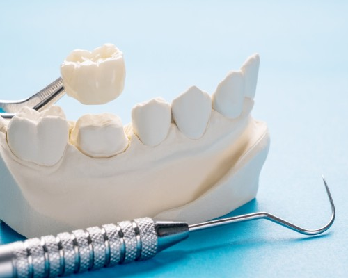
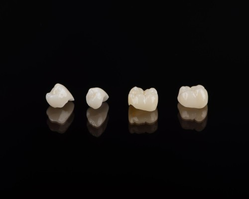
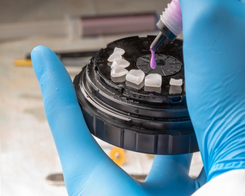
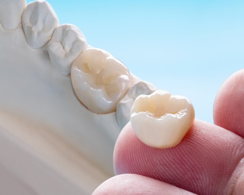
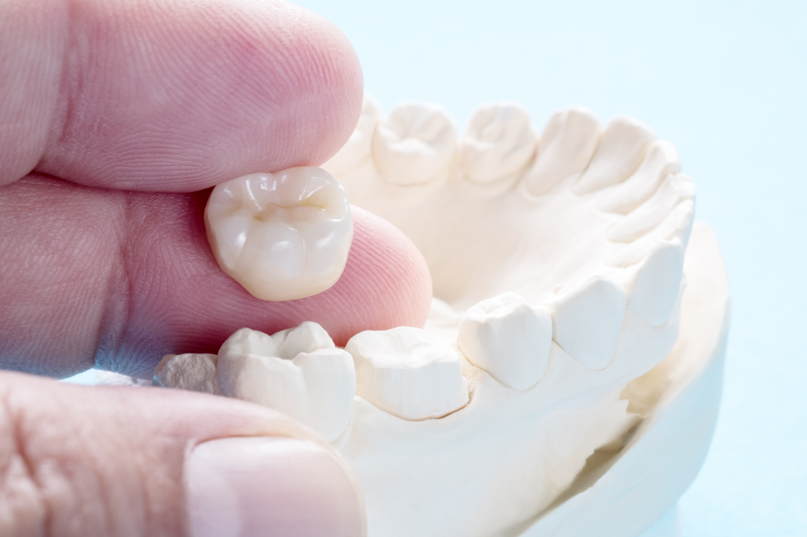

English
English
Tooth Crown-Porcelain Veneers and Crowns-Zirconium Crown-E-max Empress Veneers in Turkey
Dental Crown - Zirconia Crown - Zirconium Crown cost in Turkey
Conditions such as durability in the tooth structure, whiteness in color and sensitivity in the tooth may change over time. This change occurs as a result of advancing age, irregular nutrition, lack of care, alcohol and cigarette consumption, and disruption of dental check-ups. Aesthetic intervention is required to restore the old healthy appearance to teeth that have been changed in this way. In aesthetic dental surgery, zirconium is the most preferred choice of laminated veneer. The zirconia crown, which is prepared in the form of a thin plate, is applied in the category of orthodontics.
What is Zirconium?
It is a white, light-transmissive element commonly found in nature. Zirconium is combined with oxygen in special furnaces and converted into zirconia crown ceramics. Porcelain teeth applied in the form of “metal-supported and non-supported tooth coating” have manifested themselves in the form of zirconium tooth crown with the change in the perception of aesthetics over time.
Why is Zirconia Crown preferred? What are the features of Zirconium Veneer?
Zirconium Crown;
- It is a material resistant to breakage, cracking and abrasion,
- Does not leave a metal taste in the mouth,
- Its biocompatibility is high,
- Gingival compliance is good,
- Does not cause graying or bruising on the gums,
- Gum diseases seen in the gums of teeth with zirconium crown are much lower than those of metal coatings.
- Every color is applied to the tooth,
- Does not turn yellow over time,
- It does not cause any allergic reaction,
- Its thermal conductivity is low,
- Does not cause sensitivity in teeth,
- The bottom plate cannot easily hold,
- The probability of calculus formation is low
- It can be applied in prostheses on implants,
- It can be used in single tooth veneers or bridge prostheses.
- Its surface is shiny and smooth.
- Does not tarnish over time.
- An unfamiliar person cannot understand that he has a dental veneer by looking at his appearance.
- It can be used safely for many years.
- There is no harm to health.
For all these reasons, zirconium crown is the ideal dental coating material.
How is Zirconium Dental Crown made?
- General examination is done in the clinic. The patient's oral and dental health is checked. If the dentist needs, he or she applies to imaging methods such as x-rays.
- Local anesthesia is applied. The teeth are reduced by rasping. The size of the teeth for which the patient wants zirconium crowns is taken with soft materials or 3D digital scans. During this procedure, patients do not feel any pain. Tooth color selection is made according to the patient's request with the color scale. It is sent to the lab.
- Temporary crown teeth are attached to reduce sensitivity and aesthetic appearance until the zirconium crown tooth / teeth are prepared.
- In approximately 3-5 days, zirconium teeth are prepared. When the prepared crown is approved by the patient, the temporary teeth are removed and the zirconium crown tooth is attached.
- After the dental crown is adhered, nothing should be eaten or drunk for half an hour.
- Regular dental check-ups should be done on the dates determined by specialist dentists.
Zirconium dental crown method is performed by specialist dentists in our clinic. You can contact us at our phone numbers to make an appointment immediately or you can visit us in our clinic for the first examination.
Who are those Who have Zirconium Crown?
Anyone who does not like the appearance of their teeth and wants a more aesthetic smile can have a zirconium crown. Apart from this, those who have dental crowns have the following features:
- Those who have discolored teeth for various reasons,
- Those who have unsuccessful teeth from the whitening process,
- Those with rotten teeth,
- Those with crooked teeth,
- Those who have teeth with spaced (diastema) teeth,
- Those with teeth broken by trauma,
- Those who have teeth that require long bridgework,
- Those who want their implants to be covered with porcelain,
- People who are allergic to metal dental crowns,
- Those with missing teeth,
- Those with shorter than normal teeth,
- Those who have aesthetically impaired teeth due to gingival recession,
- Those who have crown or bridge on the posterior group teeth,
- Those who have prosthetic teeth on the implant in the anterior group,
- Those who have esthetically invisible filled teeth,
- Those who have teeth with crowns and bridges.
How long does Zirconium Teeth life?
The life of the zirconium tooth crown varies from person to person. Some people use it for 5-10 years, while some people use it for a lifetime. People who have regular dental examinations and pay attention to their oral and dental health can use their zirconia crown teeth for many years.You can use your zirconium crowns for up to 30 years with a good use of disc coating.
What should be considered after Zirconium Tooth Crown ?
- Your dentist's recommendations should be taken into account,
- Those who have the habit of grinding their teeth at night should use a night plate,
- Do not try to break or cut anything with the teeth, open the lid of the box, do not bite hard objects such as pencils,
- Nuts with hard shells should not be broken with teeth,
- Be careful when eating fruit with seeds (cherries, cherries, etc.)
- Chewing gum, paste, etc. flexible, extensible, sticky, sugary foods; Care should be taken not to consume acidic beverages,
- Necessary care for oral and dental health should be done without interruption,
- Tooth control should be done twice a year,
- Individuals who engage in combat or contact sports should use dental protectors.
Frequently Asked Questions (Zirconium Crown in Turkey - Istanbul)
For zirconium crown prices, patients will encounter an average cost. Because zirconium dental crown prices vary according to the number of teeth to be applied, the area to be applied, the doctor's experience, the materials the doctor will use and the patient's needs, the dollar/euro exchange rate in cases where the materials are imported, and the quality of the material to be used for the crown . Zircon crown may be more expensive than metal-containing veneers. Please contact us to get exact information about dental crown prices. You can visit us to have your first examination and start treatment immediately.
There is no age limit for zirconium tooth crown. Zirconium crown treatment can be applied easily in individuals who have completed their developmental age. Since the development of the jaw still continues in individuals who have not completed the age of 18, zirconium crown treatment should not be performed until the development is completed.
It uses many different materials in dental crown / veneers treatments. Different applications such as leaf dental treatment, porcelain veneer / crown or prosthesis have lost their popularity to zirconium tooth crown / veneers in recent years. Compared to other disc plating methods, zirconia crown / veneer is the most ideal veneer dental method thanks to its structure. Compatibility of color tones with natural teeth, naturalness of texture, light transmittance, durability make zirconium dental crown / veneer superior to other crown / veneer treatments.
Porcelain Veneers & Crown Treatment in Turkey
Today, one of the methods widely used in dental treatments is the application of dental veneers (crowns). This veneers teeth application is the repair process to restore the tooth, which has been damaged for various reasons, has lost a significant amount of material, and has deteriorated aesthetically and functionally. It is the application of covering the damaged tooth or teeth with tooth-shaped materials so that they are completely covered. This restorative process, which does not cause any harm to the tooth, is the state of restoring the damaged tooth, both functionally and aesthetically, by regaining the features such as shape, size and strength.
What is Porcelain Veneer?
With the dental veneers, the new visible part of our tooth is formed. For this reason, porcelain veneer are often preferred as veneer teeth material in order to protect the aesthetic feature of the teeth. This veneers, which are widely used in dental treatment applications, have different advantages compared to other veneers. Porcelain veneer are veneer that not only provides an aesthetic appearance and a beautiful smile, but also allows the functional structure of the tooth to be regained. Porcelain veneer, which are widely used in the treatment of veneer teeth, basically consist of two parts, the lower part and the upper part. With the porcelain veneer specially designed and produced for each patient, the tooth is given a natural appearance. This veneers are a very good choice for a natural tooth appearance. For this reason, it is frequently preferred in smile design applications.
What is the advantage of Porcelain Veneer Teeth?
Some advantages of porcelain veneer teeth can be listed as follows:
- Porcelain dental veneer, as it is made of an extremely durable material, provides long-term use without any problems.
- Porcelain veneer is preferred because it gives an aesthetic appearance as well as regaining the functional structure of the tooth.
- Porcelain veneer application can be completed in a shorter time compared to many dental treatments.
- Personalized smile aesthetic applications can be made with porcelain dental veneers.
What are the types of Porcelain Veneer?
Porcelain veneer are veneer teeth made of porcelain material and designed to cover the surface of damaged teeth or teeth. Porcelain veneer, which are designed and produced separately for each person and each tooth, are produced from porcelain, which has the most similar structure to the natural appearance and color of the teeth, so that a natural tooth appearance is obtained. There are basically 4 different types of porcelain veneer. These:
- Porcelain Veneer with metal supports
- Full Porcelain Tooth Veneer (E max Veneer)
- Porcelain Veneer with support zirconium
- Porcelain Laminate Veneer
In metal-supported porcelain veneer, metal material is used at the bottom of the porcelain to increase durability. This material is generally chrome nickel, chrome cobalt alloy, gold and platinum. It fulfills the required strength for the porcelain veneer by providing the necessary harmony with the tooth tissue. Porcelain forming the superstructure can be affected by this metal material. Since this metal material is opaque, it appears as a dark line between the porcelain structure and the natural tooth. For this reason, porcelain veneer with metal infrastructure are generally used in the process of covering the back teeth. Because this situation is not applied because it will spoil the aesthetic appearance of the anterior teeth.
Full porcelain tooth veneer, also known as full ceramic or full porcelain, is a type of veneers applied for anterior teeth when an aesthetic appearance is desired in order to obtain the closest appearance to the natural tooth. These veneers consist of only porcelain. So they do not have metal support. In this context, in order to increase the durability of the porcelain veneer, glass ceramic material is applied to the porcelain material surface to strengthen it. The area around the tooth to be treated is shaved evenly and made ready for veneers. Full porcelain tooth veneer type is the application that is applied in cases where veneers is required on the front teeth for different reasons, most similar to the natural tooth, and it is not noticed from the outside that it is a veneer, and it gives the patient an aesthetic smile.
Zirconium; It is a metal found in nature that is transparent, ivory-white, provides a natural tooth appearance due to its light transmittance feature, is very resistant to high pressure and hardness, does not transmit heat and cold, does not corrode, and is compatible with the human mouth structure. In order to increase the durability of the zirconium supported porcelain veneer (Zirconia Teeth), zirconium material is used instead of metal material at the bottom of the porcelain. When the zirconium material comes into contact with oxygen, extremely strong and durable zirconia is formed. Zirconium supported porcelain veneer can be applied on all teeth as they provide a natural tooth appearance on the front teeth and the desired solid structure on the back teeth. Thanks to its white structure and light transmittance, the zirconium material does not form a gray-black thin structure between the tooth and the porcelain, as in metal-supported porcelain veneer. Thus, teeth with a more natural, robust and aesthetic appearance are obtained.
Porcelain laminate veneer , also known as leaf porcelain among the people, is generally applied to correct the bad appearance of the anterior teeth and to obtain an aesthetic tooth appearance. In addition, it is used for correcting teeth with bad structure and shape, diastema treatment (split tooth joining), repairing broken and worn teeth, correcting warped and crooked teeth, and giving highly colored teeth a more natural color. This type of veneer is a highly advanced method that can be used without disturbing the aesthetic appearance of the tooth. These veneers, which are very similar to the structure of the natural tooth and are specially prepared for the patient, do not contain metal support structure and are highly resistant to breakage, have thin and semi-permeable properties ; It is a porcelain veneer application that is adhered to the front surfaces of the teeth after a very little thinning on the tooth. It is a highly preferred porcelain veneer method because it does not need to be cut on all surfaces of the tooth, the loss of healthy tooth tissue is minimal, it is completed in a very short time and has an extremely aesthetic appearance. In the treatment of porcelain veneer, it is aimed that the patient can fully fulfill his oral functions, while at the same time achieving an extremely natural tooth appearance and gaining a perfect smile.
How is Porcelain Veneer made?
Before starting the porcelain veneer application, if there are advanced gum disease conditions that require caries and root canal treatment, these are treated. Porcelain veneer, which is custom made in accordance with the patient's tooth color and shape, basically consists of four stages. These;
- Preliminary preparation
- Impression, design and production of Porcelain Veneer
- Proofing of Porcelain Veneer in the mouth
- Final rehearsal and bonding of the Veneer
First, preparation is made to ensure the desired harmony between the natural teeth and the veneer by reshaping the natural teeth, such as thinning, filing and cutting, according to the thickness of the veneer.
The dentist takes the measurement of the teeth to be covered with porcelain veneer and a mold is taken to obtain the exact shape of the desired tooth shape. Impression taking is performed with classical molding methods or systems with 3D imaging technology. The resulting mold or 3D images are sent to the laboratory for the design and manufacture of the porcelain veneer . In an average of 1-2 weeks, the production process of the porcelain veneer is completed. Until the porcelain veneer is put in place, the temporary veneer process is performed so that the teeth on which the cutting process is applied can be used comfortably and the cut teeth are not damaged.
The porcelain veneer , the size of which is sent to the laboratory by the dentist, and produced specifically for the patient in the laboratory, is placed on the tooth of the person to examine its compatibility with adjacent and opposite teeth and natural tooth color, and a preliminary rehearsal is made. At this stage, the patient's opinion is also taken in the evaluations made in terms of aesthetics and color. Before the porcelain veneer is adhered to the tooth, it is rehearsed and necessary corrections are made. If a problem occurs during this rehearsal phase and this situation cannot be resolved by the dentist, it is sent back to the laboratory and necessary corrections are made.
The porcelain veneer teeth, which comes from the laboratory in its final form as polished and polished, is rehearsed in the mouth for the last time and if there is no problem, after the patient's consent is obtained, it is glued to the tooth using a special type of adhesive and the process is completed. After the procedure, the patient is informed about oral care and prosthesis use.
In which situations is Porcelain Veneer Teeth applied?
Porcelain veneer can be applied for dental health purposes as well as for aesthetic concerns. Situations where porcelain veneer can be made are as follows;
- In case the decayed teeth that cannot be treated with normal fillings can be reused by saving the healthy part, without causing further tissue loss.
- Repair of severely damaged broken teeth
- Aesthetic appearance of slightly crooked anterior teeth
- Removal of discoloration and color mismatch in anterior teeth
- Aesthetic improvement of the teeth of people who have aesthetic anxiety due to their teeth and want to have a more beautiful smile.
In patients with one or more of the above-mentioned conditions, the appropriate dental veneer type is determined and applied as a result of the interview with the specialist dentist. Porcelain veneer can be applied to one tooth or to more than one tooth.
What happens after Porcelain Veneer process? What Is considered?
After the porcelain veneer process, patients can continue their normal lives from where they left off, as there is no serious pain or aches. After the effect of the anesthesia wears off, patients can start eating and drinking activities. After the veneer process, hardness and protruding may be felt in some parts. This is perfectly normal and goes away on its own within a few days. If this situation continues for a long time, the veneers are filed again by the dentist and the situation is corrected. pain and aches that may occur in the first week after treatment are treated with the help of painkillers given by your dentist. The following should be considered after the treatment.
- Hard objects (nails, pencils, etc.) should not be bitten.
- Consumption of extremely hot and cold foods/drinks should be avoided.
- Avoid foods that will damage or stain the porcelain coating, or brush your teeth immediately after consumption.
- Avoid extremely hard foods that may damage the porcelain veneer .
- If you have problems with clenching and grinding at night while you sleep, a retainer dental appliance should be used.
Frequently Asked Questions about Porcelain Veneer Teeth in Turkey
The life of porcelain veneer teeth may vary from person to person. The main factors in this change are the patient's attention to personal oral and dental care and routine dental examination checks on time. When these factors are taken into consideration, the lifespan of porcelain dental veneer can vary between 8 and 12 years when personal oral care is performed and routine controls are not interrupted. At the end of this period, porcelain veneer can be replaced.
There is no standard dental veneers cost for the porcelain veneer process. The porcelain veneer cost can vary according to various factors. These factors are;
- The quality of the material to be used as a porcelain veneer is an important factor in determining the veneers cost. Because with the use of quality materials, porcelain teeth can be used for 10 years without any problems. For this reason, quality should never be compromised by considering the cost.
- There are 4 different types of porcelain veneer. The veneer price varies according to the type to be used.
- The veneers cost increase with the increase in the number of teeth to be applied.
- Whether another treatment application (canal cleaning, gingival treatment, etc.) is required before porcelain veneer.
- Additional process application after porcelain veneer.
Before the procedures such as cutting and filing applied for the preparation of the teeth, local anesthesia is applied to ensure that the patient does not feel the pain that will occur. During this time, the patient does not feel any pain or ache. However, after the effect of the anesthesia wears off, the patient will feel some pain and tingling. This is normal. For this purpose, painkillers are given by your dentist to ensure that you do not feel pain and ache after the procedure. If your aches and pains are more than normal, it will be useful to see your dentist.
If the material used in the treatment of porcelain veneer is of good quality and the process is applied well, there is no odor problem in porcelain dental veneers. Bad breath is usually caused by rotten teeth and gum disease.
There is no special oral care process for porcelain veneer. Oral care applications such as brushing, flossing and mouthwash are applied to porcelain tooth coatings, just like our normal teeth. Routine dental check-ups are made twice a year.
Although porcelain veneer look like a normal tooth in appearance, they are not porous like normal teeth, but have a non-porous structure like glass. For this reason, there is no area on the veneer surface for the color materials to adhere. There will be no change in the color of the porcelain veneer, which is specially prepared for you and in the color you specify.
The lower age limit for porcelain veneers treatment is 18, and it can be applied to any patient over that. In patients under the age of 18, there may be a problem later on in the veneer made because the jaw development continues. However, porcelain veneer made for patients over the age of 18 can be used for many years.
Porcelain Veneer treatment can be completed in an average of 3 sessions. However, this situation may be prolonged or shortened depending on the condition of the teeth to be veneered and the damage. The point to be noted here is that there should be at least 2-3 days between these sessions. Thus, this veneers is placed on the tooth in a better way.
After the procedure, the porcelain veneers may cause pain by pressing on the gums, lower or side teeth. This may be caused by the patient's mouth structure or an incorrect application. A porcelain veneer designed to put excessive pressure on the gum causes pain.
One of the most important questions that patients wonder and worry about is whether the natural tooth under the veneer will rot over time. It is not very common for patients who perform the necessary personal oral care practices to decay on the crown and the support teeth on which they sit. However, during the application, it is important that the veneer is made in a way that is in harmony with the natural tooth and the surrounding tissue in the best way. Because after the procedure, if there is a gap or incompatibility between the veneer and the natural tooth, bacterial accumulation occurs over time and caries formation begins with the melting of the adhesive material. Therefore, it is extremely important to pay attention to personal oral care.
Emax Crown - Empress Veneer in Turkey
The perfect appearance of teeth, which is very important for general body health, is a feature everyone wants. A relaxed smile gives you confidence. You may be hesitant about which treatment you should have for appearance disorders in the teeth because multiple options will confuse you about dental veneers. Your dentist's advice can be a savior for you. Of course, many factors will affect your choice when deciding on this. These factors are; factors such as the strength, appearance and good placement of the crown to be used. It is also essential to determine what materials the crown or crown contains. To put it briefly;
What is a Crown on a Tooth?
A crown is a material used to cover teeth for various reasons. It is generally used to protect the tooth and for dental aesthetics. Usually, dental veneers (crowns) consist of the following:
- Stainless steel crowns used for permanent teeth
- Metal crowns made of gold, base metal or platinum-containing alloys
- Crowns containing metal fused to porcelain, which is at risk of shattering over time
- All-resin-containing crowns made of resin, which are at risk of breakage due to their lack of durability
- Crowns made of all-ceramic/zirconia material providing a perfect color match, as in Emax veneers.
Emax crown is mostly used to strengthen the teeth' structure or prevent damage to the teeth after root canal treatment. Many of the world's dentists count Emax crowns among the most preferred ones in the dental veneer field. This is because the emax crown is made of a glass-based all-ceramic material called lithium disilicate. It is also a good alternative aesthetically. Emax crown, which has a solid structure, has many advantages over other traditional dental coating materials. In our article, you can find out what Empress and Emax coating is, its benefits, how it is prepared, its opposing sides, and more information.
What is Emax? What is Emax Porcelain Veneers?
- With the Empress dental veneer technique, the problem of discoloration in the teeth, spaces between the teeth, curved, crooked, distorted, cracked, stained teeth are treated.
- There are many color options to match your other teeth. A natural look is obtained both in daylight and under artificial light.
- Empress dental crowns are strong, durable and of high quality. These features allow you to continue your daily life comfortably and do your eating and drinking activities comfortably. Strong materials and high standards
- Since there is no metal core in Empress dental crowns, there is no risk of metal allergy in patients, and possible curvatures due to temperature changes do not occur.
- This technique, which dentists worldwide have used for years, gives excellent results.
- Empress dental crowns can function for up to 15 years with careful care after the procedure.
Advantages of Empress Dental Veneers
- With the Empress dental veneer technique, the problem of discoloration in the teeth, spaces between the teeth, curved, crooked, distorted, cracked, stained teeth are treated.
- There are many color options to match your other teeth. A natural look is obtained both in daylight and under artificial light.
- Empress dental crowns are strong, durable and of high quality. These features allow you to continue your daily life comfortably and do your eating and drinking activities comfortably. Strong materials and high standards
- Since there is no metal core in Empress dental crowns, there is no risk of metal allergy in patients, and possible curvatures due to temperature changes do not occur.
- This technique, which dentists worldwide have used for years, gives excellent results.
- Empress dental crowns can function for up to 15 years with careful care after the procedure.
Who should the Empress Dental Crown be made?
- If the person has a significant tooth fracture
- If the tooth decay is severe and large
- If you have had root canal treatment before
The empress crown is one of the ideal techniques to cover the damaged appearance. During the preliminary examination by the specialist dentist, it will be evaluated whether the empress dental crown is a suitable technique for you.
What are Emax coating options?
There are multiple tooth repair and renewal options in the E max dental veneer system. These;
- Coatings,
- Inlays, which are a filling method that does not cover the upper part of the tooth, (applied in tissue damage that cannot be repaired with a simple filling)
- Onlays, which are a filling method for covering caries on the upper part of the tooth.
- Single or short-span bridges..
What are the Emax Dental and Empress Dental Veneer Treatment stages?
E max dental veneer treatment steps are as follows;
- First of all, the severely damaged parts of the tooth, if any, are removed by the dentist. During this process, it is observed that the healthy parts of the tooth remain in the mouth.
- Afterwards, the images of the teeth are taken through an intraoral camera and the measurement is taken.
- Local anesthesia is applied to the patient's area to be treated, the tooth surface is abraded, and the tooth is ready for the veneer.
- Emax or empress dental veneers selected for veneer are made ready in the laboratory.
- Emax veneer is adhered to the tooth with specially prepared adhesives. Fine adjustments can be made by the dentist if necessary.
This process takes place in a single session, on the same day, in an average of 1-2 hours. The patient does not have to wait for days for a permanent crown.
How should Emax Dental Veneer care be done?
Oral and dental care is critical in E max tooth coating. If you do not take the necessary care for your emax veneers, you may soon observe discoloration and shedding on the crowns. Here are the things you need to do for Emax dental care:
- Paying attention to oral and dental hygiene
- Brushing with a soft brush for at least 2 minutes at least two times a day like your other natural teeth
- Not to delay dentist control examinations
- Using mouthwash and flossing daily
- Avoiding the consumption of hard and shelled (hazelnuts, etc.) foods that have the risk of damaging the coatings.
What should be considered after E-max Dental or Empress Dental coating process?
- All instructions given by your specialist dentist should be followed after the treatment,
- Oral hygiene and care and dental health and care should be done regularly.
- You should not try to open things such as packages with your teeth, use coated teeth to break something, open the bottle or box lid, and avoid chewing complex objects.
- Hard and crusty foods such as hazelnuts should not be broken with the teeth.
- Sugary foods such as Turkish delight, which may stick to the teeth, and acidic and carbonated drinks should not be consumed.
- Control examinations to be carried out by your dentist at least twice a year should not be interrupted.
- If you are involved in sports where your mouth and face may be damaged, it is recommended to use dental protectors.
How long is Emax Coating Treatment?
Emax veneer treatment time varies depending on how many teeth will be treated. The average duration of treatment is one week. The procedure is completed in approximately 2-3 sessions.
How long do Empress and Emax Dental covering Treatment sessions last?
Considering the size of the procedure to be performed in the first session in the empress coating method, the session covers a time of approximately 30 minutes. Local anesthesia is given to the patient for the procedures in the first session. Other sessions following the treatment will be shorter than the first session.
How much is Emax Dental coating price?
Emax coating is a material with a high price because of its very high quality. In addition, since the coating materials are imported materials, changes in dollar and euro prices affect the price. The clinic where the application will be made, the experience of the physician and the ceramist, the number of teeth to be applied, and similar factors are also crucial in determining Emax dental prices. The exact price will be determined only after the preliminary inspection.
How long can E-max coating be used? How long is the Emax coating life?
E-max coating generally maintains its function for 15-20 years. However, the duration of use may vary from person to person. Factors affecting E max tooth lifetime:
- Anything that can damage your natural teeth
- Wear and tear in the dental veneer
- Oral and dental care
- Personal oral habits (clenching and grinding of teeth, breaking hard objects,
- Regular brushing
- Use of dental floss
- Using mouthwash
- Fulfilling the recommendations recommended by the dentist
- Not to disrupt routine dentist checks twice a year
Frequently Asked Questions about Emax - Empress Crown & Veneers in Istanbul
Emax coating does not stain if enough care is taken. Beverages that can cause stains on your coating, albeit rarely, are heavily consumed coffee or red wine. If there is no damage on the Emax tooth, stains can be removed by a specialist dentist cleaning the crown's surface.
Whitening cannot be done on Emax tooth coating. Since there are many color options, cleaning the teeth before the procedure can eliminate the color incompatibilities that will occur later. The only way to whiten coatings that are rarely stained by wine, coffee or smoking is to restore them.